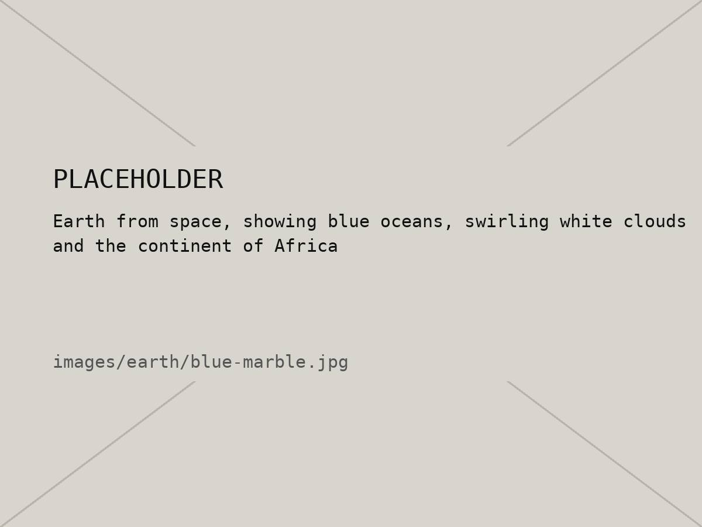
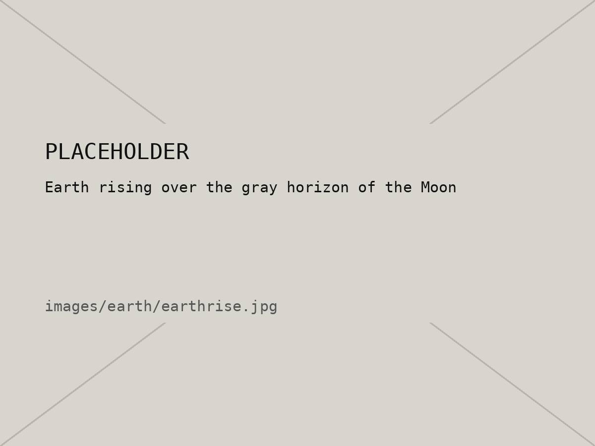

04 / 10 — Planet 3
Earth
Home. Still the only place we know of with life.
01 — Intro
Earth is the third planet from the Sun and the biggest of the four rocky ones. It's the only planet we know of with liquid water sitting on the surface, and the only one with life, at least so far.
It's at just the right distance from the Sun, not too hot and not too cold, which is why it gets called the “Goldilocks” planet. The atmosphere and magnetic field also do a lot of quiet work in the background, blocking radiation and burning up space rocks before they hit us.
02 — Quick facts
| Distance from the Sun | About 150 million km (1 AU) |
|---|---|
| Diameter | 12,742 km |
| Length of a day | About 24 hours |
| Length of a year | 365.25 days |
| Covered by water | About 71% |
| Average temperature | About 15 °C |
| Moons | 1 |
03 — Images


04 — Quick quiz
Five questions. Everything you need is somewhere on this page.
Question 1 / 5